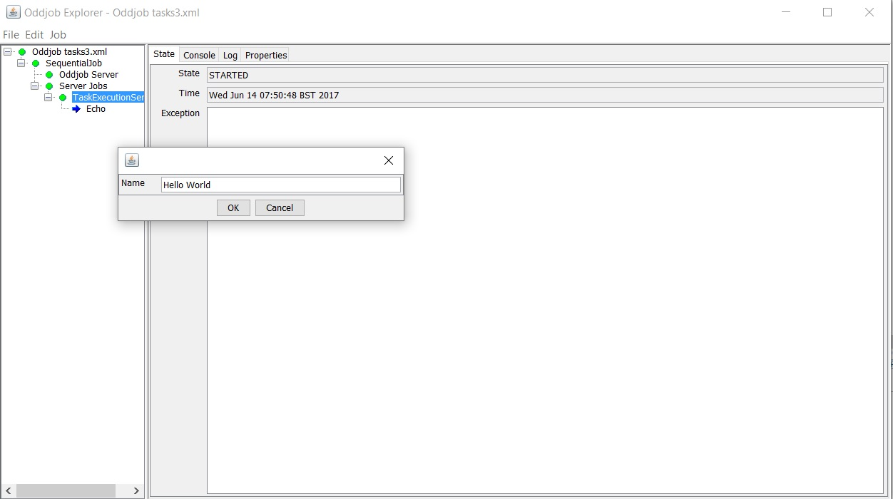

Odd Features not documented elsewhere.
The idea of a Task was introduced in Oddjob 1.5 as a way to get round the limitations of running jobs remotely with different properties. Doing this locally has always been relatively simple with input but remotely required waiting for a property to be set.
Here's the server side of such an arrangement:
{@oddjob.xml.file examples/userguide/tasks1.xml}And here's the client side:
{@oddjob.xml.file examples/userguide/tasks2.xml}The server waits for the greeting property to be set on the
variables job and then echos
the value.
The Client prompts the user for input and then sets this property remotely with the set job. Now this works, but it's ugly.
Here's the same problem with a task-service on the server:
{@oddjob.xml.file examples/userguide/tasks3.xml}And here's the client:
{@oddjob.xml.file examples/userguide/tasks4.xml}The client gets input from the user as before, but reads the request from the requests property of the service on the server. The task-request then requests the task executes the request on the service on the server.
Both the above examples above can be run by specifying a server.address property when running the client, and running the server with a JMX port as outlined in the server documentation. The client and server can also be run together in the same JVM with no connection property set on the client as they are for the tests.
When running either the client or server from explorer, if the service is selected the job menu contains an 'Execute' option, which when selected will prompt for the properties of the task and then execute the task.
The web interface also supports executing jobs and produces pop-up form to prompt for properties before executing the task.
The current task service only supports a single execution at a time. If another request occurs while the task is executing it will be ignored. A parallel version that supports concurrent executions will be developed at some point in the future.
Bean Bus provides data pipeline functionality within Oddjob. A bus generally consists of a Bus Driver that drives data down the pipeline to subsequent destinations.
Bean Bus is likely to be of most use to developers who wish to quickly get data from one place to another. A sister project of Oddjob, DIDO provides Bean Bus compatible components for moving data between Databases, CSV files, JSON files and Excel.
For more on bean bus, look at the bus: prefixed jobs in the reference,
starting with bus:bus
In addition to the Web UI Oddjob provides basic wrappers around Jetty to provide a web:server and web:client
The server exposes Jetty's pattern of pluggable handlers. Handlers provided out of the box with Oddjob are: